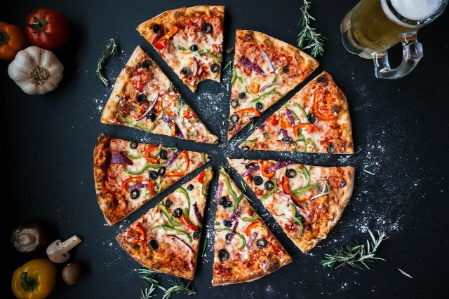

Pizza recipe

Description
Who doesn't love pizza? it's one the most loved food among the world.
In this easy short recipe we will learn how to make delicious pizza.
Ingredients
For the dough
- 1 1/2 cups (355 ml) warm water
- 1 package (2 1/4 teaspoons) active dry yeast
- 3 3/4 cups (490g) bread flour
- 2 teaspoons kosher salt
- 1 teaspoon sugar
For the sauce
- Tomato Sauce
- Tomato Paste
- Oregano/Italian seasoning
- Diced garlic
- Granulated sugar
Steps
-
Gather all dough ingredients. Preheat oven to 450 degrees F (230 degrees
C), and lightly grease a pizza pan.
-
Place warm water in a bowl; add yeast and sugar. Mix and let stand until
creamy, about 10 minutes.
-
Add flour, oil, and salt to the yeast mixture; beat until smooth. You
can do this by hand or use a stand mixer fitted with a dough hook to
make it easier.
- Let rest for 1 hour.
-
Turn dough out onto a lightly floured surface and pat or roll into a
12-inch circle.
- Transfer to the prepared pizza pan.
- Spread crust with sauce and toppings of your choice.
-
Bake in the preheated oven until golden brown, 15 to 20 minutes. Remove
from the oven and let cool for 5 minutes before serving.